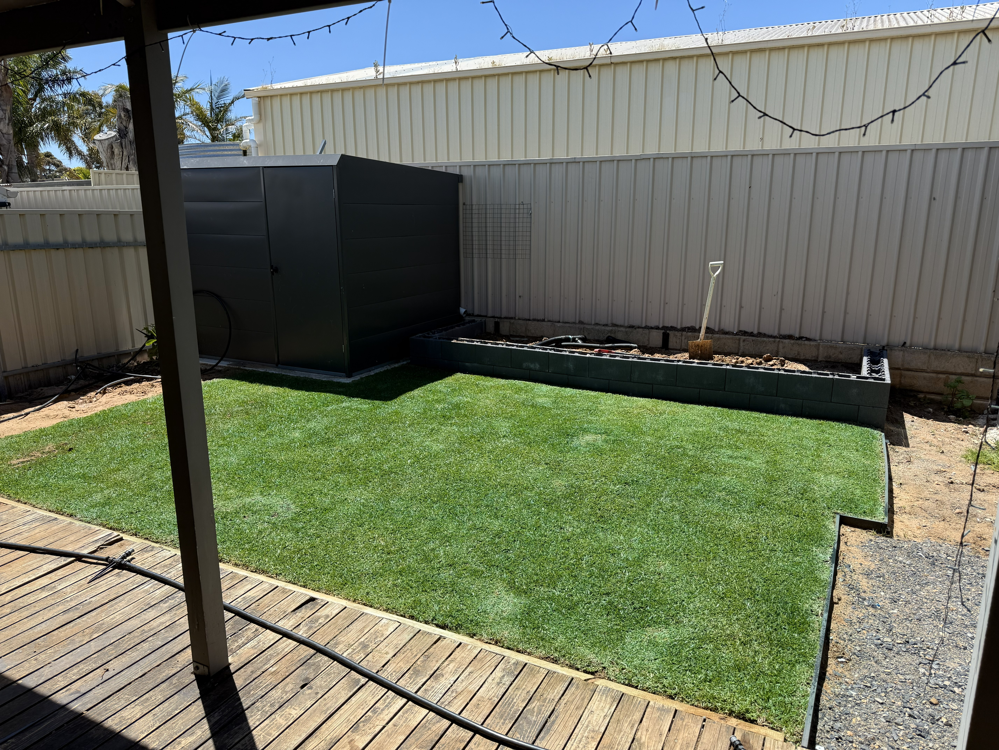

Outdoor transformations in Reynella and Old Reynella — retaining walls, turf installation, irrigation, and planting by a local team that understands the southern suburbs.
Reynella and Old Reynella are well-established suburbs with a broad mix of property ages and styles — from older homes on generous blocks in Old Reynella through to more compact newer properties in Reynella proper. This variety means landscaping requirements here range from complete garden renovations on mature blocks to full new-build landscaping on recently developed sites.
We work regularly across both suburbs, and the consistent themes we encounter are clay soil drainage challenges, sloped sections requiring retaining walls, and irrigation systems that need to be designed for Reynella's soil characteristics rather than installed with a generic off-the-shelf approach. Getting these fundamentals right makes every other element of the landscaping — turf, planting, paving — perform better and last longer.
Our team handles everything in-house: retaining walls, turf installation, irrigation design and installation, drainage, planting, and gutter cleaning. One local team, one quote, one point of contact from start to finish — no subcontractors, no confusion about who's responsible for what.

Block and timber retaining walls for Reynella's varied terrain — properly engineered with drainage so they perform structurally in local clay soil conditions for decades.
Sir Walter, Kikuyu, and TifTuf turf supplied and installed with full site preparation — ensuring fast establishment and healthy growth through Reynella's hot summers.
Hunter MP Rotator systems and Bluetooth NODE timers designed for Reynella soil types — efficient, compliant with SA Water restrictions, and programmed correctly from day one.
Surface and sub-surface drainage to manage winter rainfall and prevent water sitting against homes — a common issue in Reynella's clay-heavy ground conditions.
Plant selection matched to local conditions — species that thrive in Reynella's soil and climate, finished with quality mulch to keep maintenance requirements low.
Vacuum gutter cleaning across Reynella and Old Reynella — all debris removed, downpipes confirmed clear, and condition reported at completion of every service.
Reynella and Old Reynella sit in an area with predominantly clay soil — a characteristic shared across much of Adelaide's south that has direct implications for how landscaping projects should be designed and built. Clay expands when wet and contracts in summer heat, which creates ground movement that can shift paving, affect drainage, and put stress on retaining wall structures over time. We account for this in every project — the right footings, the right drainage placement, the right materials for the specific site conditions.
Old Reynella in particular has many properties with generous, established gardens that have been modified and extended over decades. These older gardens often have drainage issues that were never properly resolved — water that sits against the house, poorly functioning irrigation from an earlier era, or retaining walls that were built without adequate drainage and are now showing signs of movement. We regularly work on these renovation projects, resolving the underlying problems while creating a refreshed, functional outdoor space.
Newer sections of Reynella tend to have smaller blocks and newer homes, where the focus is often on making the most of a compact outdoor area — efficient lawn space, garden beds that don't dominate the block, and irrigation that keeps the garden green without wasting water. These projects are about clever use of space as much as they are about construction, and our garden design background helps us create layouts that feel larger and more usable than the block size might suggest.
For both Reynella and Old Reynella, we provide a complete landscaping service — meaning you're not coordinating multiple trades or chasing up different contractors for different parts of the project. We manage everything ourselves, which keeps the project on track and ensures that each element of the build works together as it should.
As well as Reynella and Old Reynella, we landscape regularly across the surrounding southern Adelaide suburbs.